Puntata #00 — IL TRAILER: Come raccontare la prima 'App-non-App'?
🎯 STREAM 1 (08:15) — ANCORA LAPIDARIA #00-A
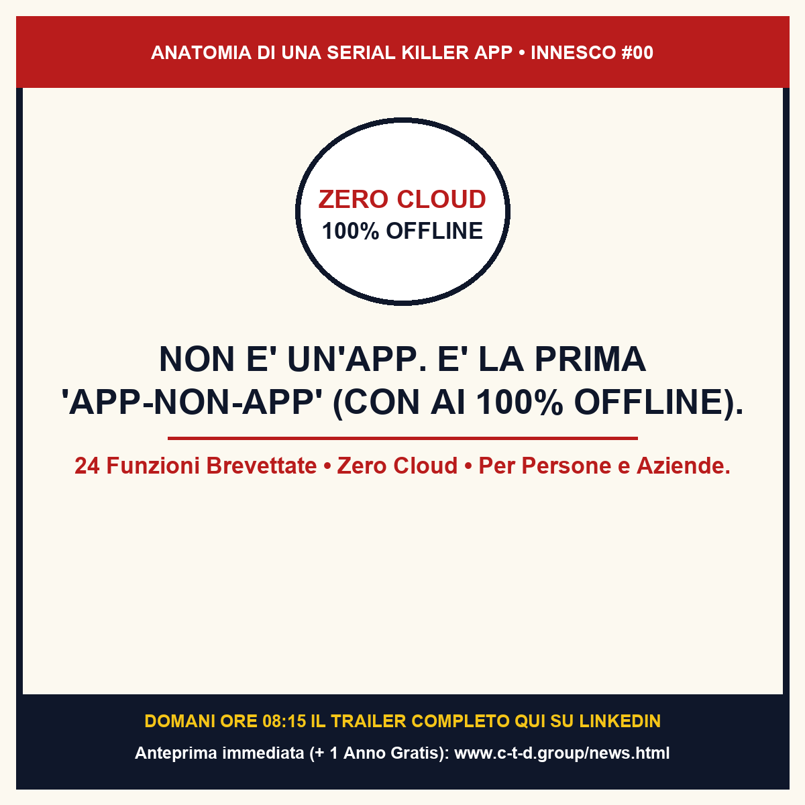
Ancora_LinkedIn_Puntata_00.pdf
📥 Scarica / Salva Ancora_LinkedIn_Puntata_00.pdf
🚀 Apri Finestra Post LinkedIn
🟢 54/58 caratteri (OK)
🟢 563/3000 car. (Margine: +2437)
📘 STREAM 2 (08:15) — STUDIO MASTER #00-B

Carosello_LinkedIn_Puntata_00.pdf
📥 Scarica / Salva Carosello_LinkedIn_Puntata_00.pdf
🚀 Apri Finestra Post LinkedIn
🟢 55/58 caratteri (OK)
🟢 3189/3000 car. (Margine: +-189)
Puntata #01 — Il Manifesto: 3 Systems in 1 Platform (S = C + P + T + R)
🎯 STREAM 1 (08:15) — ANCORA LAPIDARIA #01-A
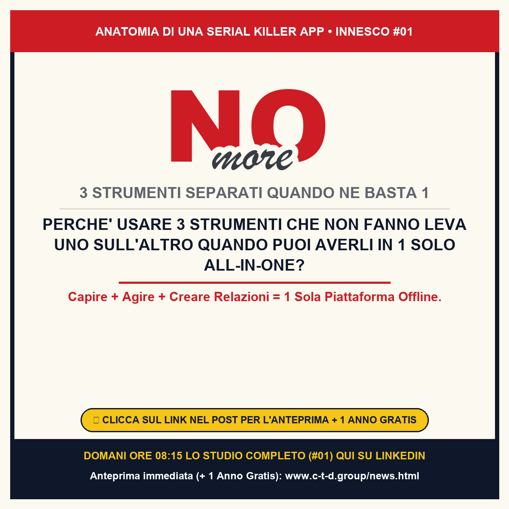
Ancora_LinkedIn_Puntata_01.pdf
📥 Scarica / Salva Ancora_LinkedIn_Puntata_01.pdf
🚀 Apri Finestra Post LinkedIn
🟢 50/58 caratteri (OK)
🟢 588/3000 car. (Margine: +2412)
📘 STREAM 2 (08:15) — STUDIO MASTER #01-B
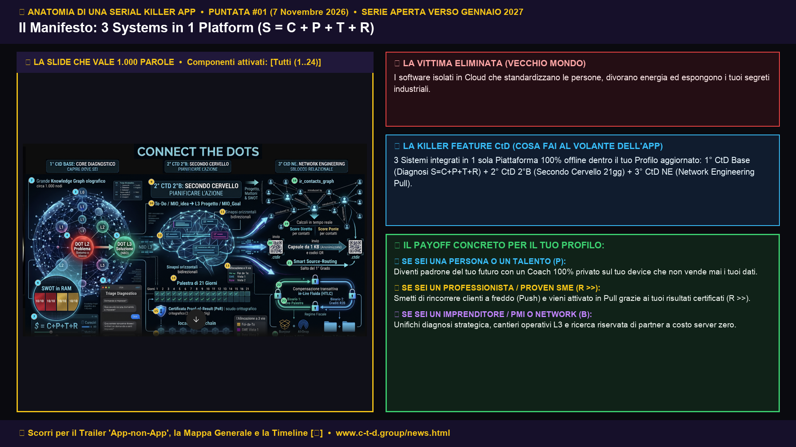
Carosello_LinkedIn_Puntata_01.pdf
📥 Scarica / Salva Carosello_LinkedIn_Puntata_01.pdf
🚀 Apri Finestra Post LinkedIn
🟢 55/58 caratteri (OK)
🟢 2458/3000 car. (Margine: +542)
Puntata #02 — Cervello, Orizzonti e Triage Diagnostico Causale
🎯 STREAM 1 (08:15) — ANCORA LAPIDARIA #02-A
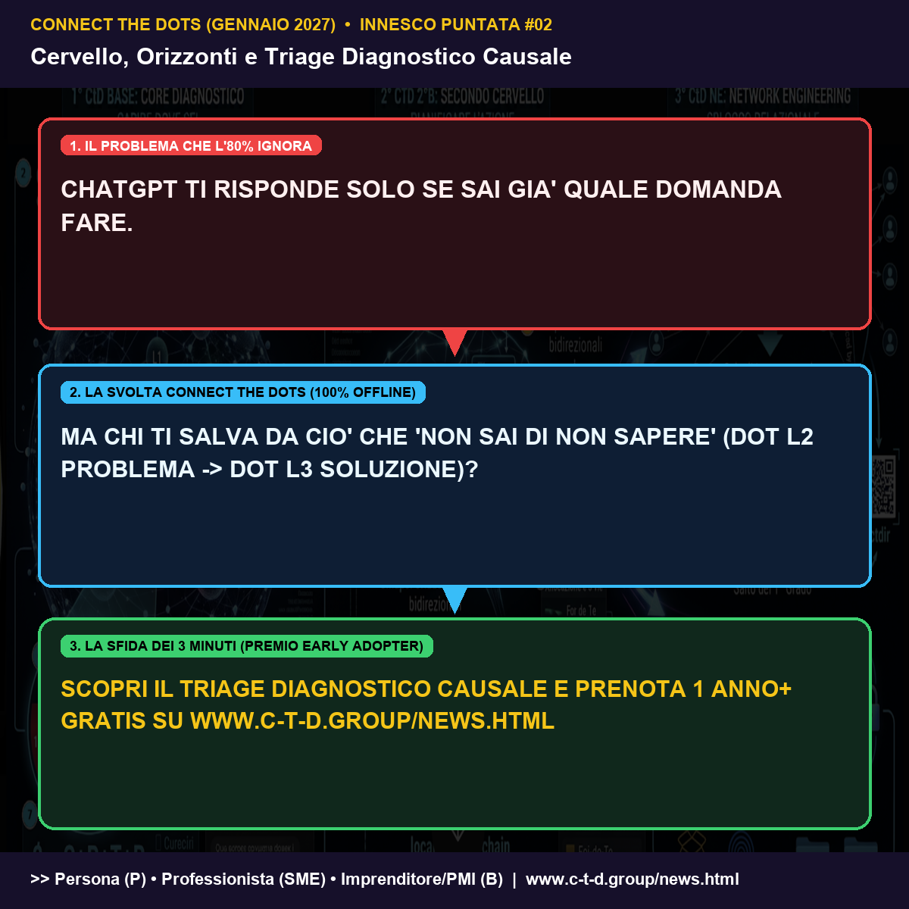
Ancora_LinkedIn_Puntata_02.pdf
📥 Scarica / Salva Ancora_LinkedIn_Puntata_02.pdf
🚀 Apri Finestra Post LinkedIn
🟢 53/58 caratteri (OK)
🟢 530/3000 car. (Margine: +2470)
📘 STREAM 2 (08:15) — STUDIO MASTER #02-B
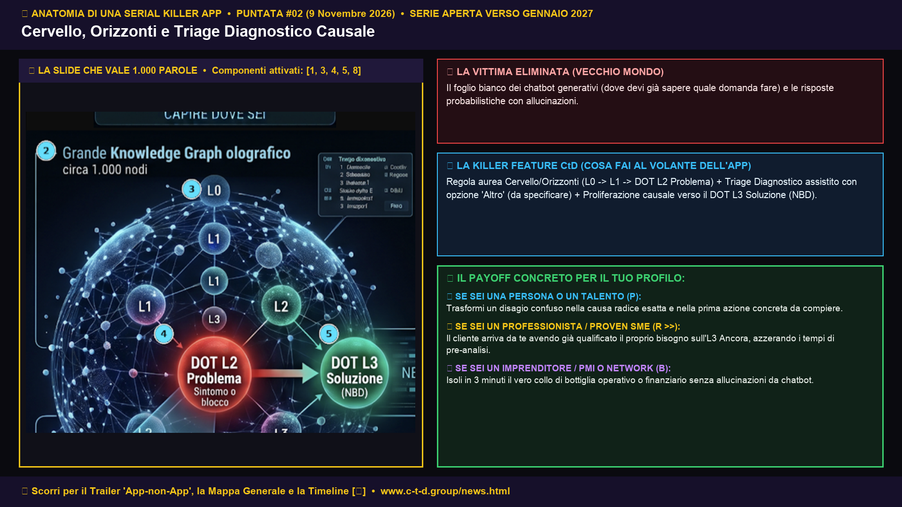
Carosello_LinkedIn_Puntata_02.pdf
📥 Scarica / Salva Carosello_LinkedIn_Puntata_02.pdf
🚀 Apri Finestra Post LinkedIn
🟢 54/58 caratteri (OK)
🟢 2587/3000 car. (Margine: +413)
Puntata #03 — SWOT in RAM (Ignoto = 10/10) e il Tasto Sovrano 'Pausa'
🎯 STREAM 1 (08:15) — ANCORA LAPIDARIA #03-A
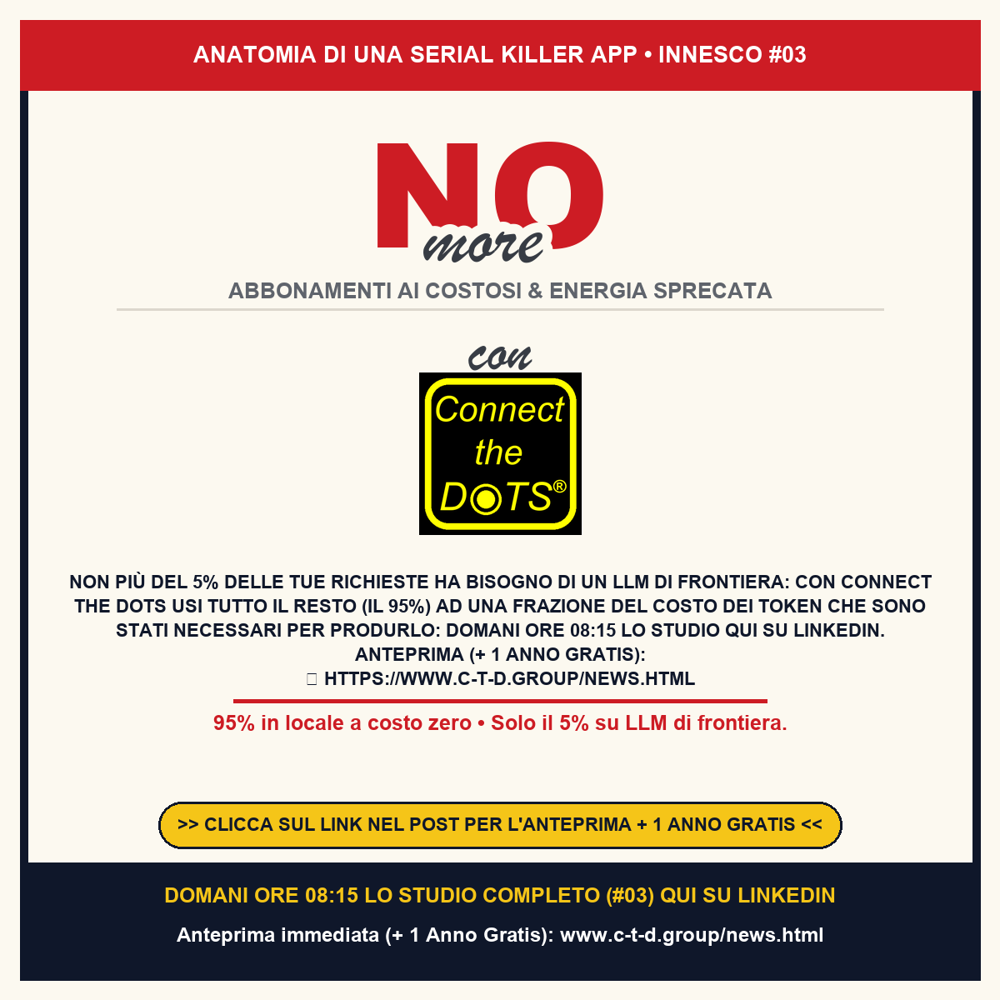
Ancora_LinkedIn_Puntata_03.pdf
📥 Scarica / Salva Ancora_LinkedIn_Puntata_03.pdf
🚀 Apri Finestra Post LinkedIn
🟢 52/58 caratteri (OK)
🟢 537/3000 car. (Margine: +2463)
📘 STREAM 2 (08:15) — STUDIO MASTER #03-B
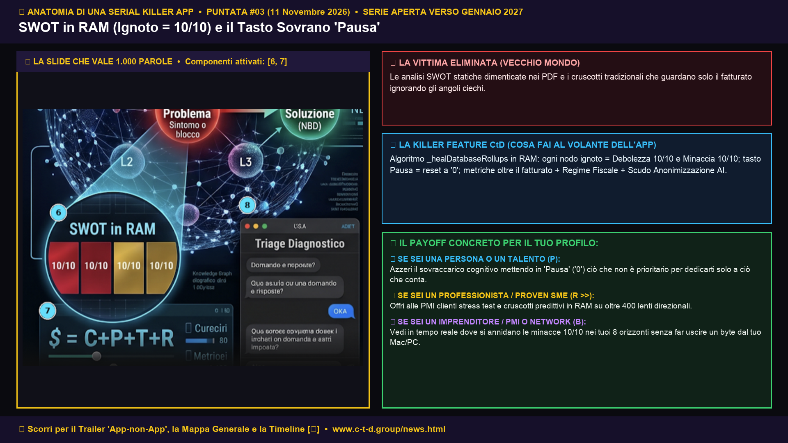
Carosello_LinkedIn_Puntata_03.pdf
📥 Scarica / Salva Carosello_LinkedIn_Puntata_03.pdf
🚀 Apri Finestra Post LinkedIn
🟢 55/58 caratteri (OK)
🟢 2534/3000 car. (Margine: +466)
Puntata #04 — L'Esperanto dei ~1.000 DOT e la Micro-Blockchain Offline
🎯 STREAM 1 (08:15) — ANCORA LAPIDARIA #04-A
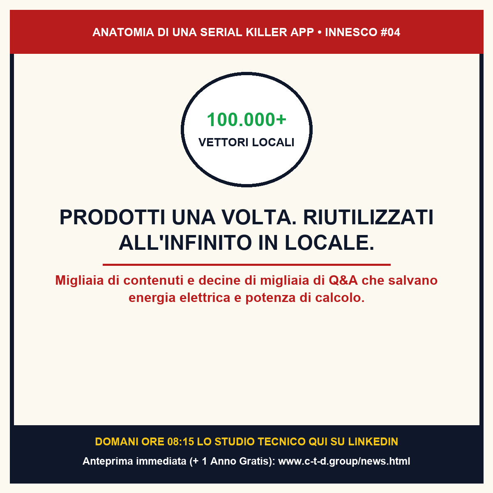
Ancora_LinkedIn_Puntata_04.pdf
📥 Scarica / Salva Ancora_LinkedIn_Puntata_04.pdf
🚀 Apri Finestra Post LinkedIn
🟢 55/58 caratteri (OK)
🟢 559/3000 car. (Margine: +2441)
📘 STREAM 2 (08:15) — STUDIO MASTER #04-B
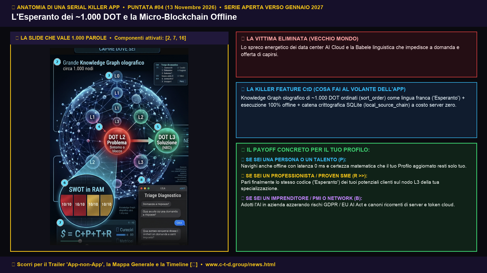
Carosello_LinkedIn_Puntata_04.pdf
📥 Scarica / Salva Carosello_LinkedIn_Puntata_04.pdf
🚀 Apri Finestra Post LinkedIn
🟢 55/58 caratteri (OK)
🟢 2440/3000 car. (Margine: +560)
Puntata #05 — 2° Cervello: Proliferazione To-Do -> L3 Progetto & Sinapsi
🎯 STREAM 1 (08:15) — ANCORA LAPIDARIA #05-A
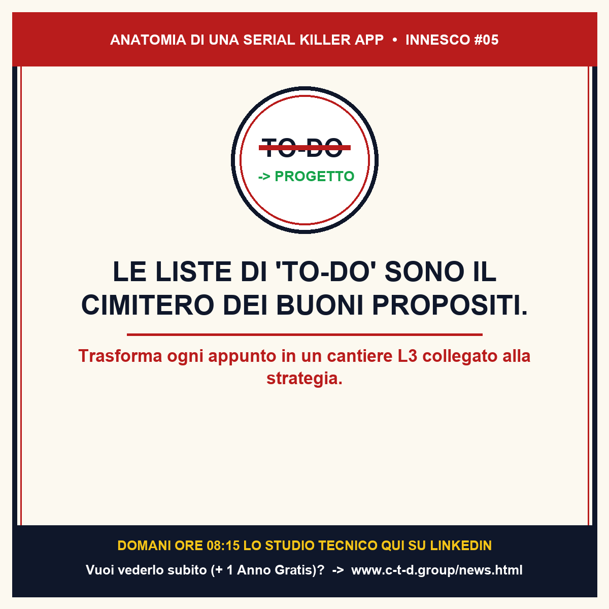
Ancora_LinkedIn_Puntata_05.pdf
📥 Scarica / Salva Ancora_LinkedIn_Puntata_05.pdf
🚀 Apri Finestra Post LinkedIn
🟢 53/58 caratteri (OK)
🟢 572/3000 car. (Margine: +2428)
📘 STREAM 2 (08:15) — STUDIO MASTER #05-B
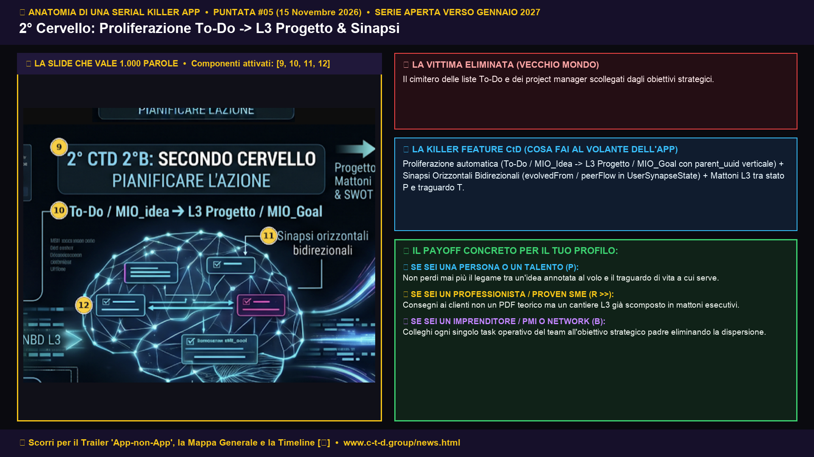
Carosello_LinkedIn_Puntata_05.pdf
📥 Scarica / Salva Carosello_LinkedIn_Puntata_05.pdf
🚀 Apri Finestra Post LinkedIn
🟢 54/58 caratteri (OK)
🟢 2441/3000 car. (Margine: +559)
Puntata #06 — Allocazione a 3 Vie, Palestra di 21 Giorni e Certificato PoR
🎯 STREAM 1 (08:15) — ANCORA LAPIDARIA #06-A
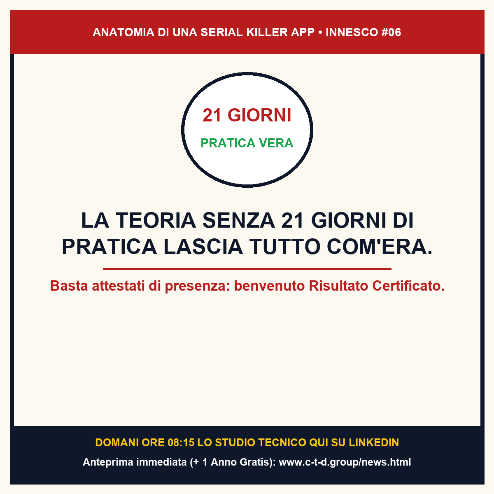
Ancora_LinkedIn_Puntata_06.pdf
📥 Scarica / Salva Ancora_LinkedIn_Puntata_06.pdf
🚀 Apri Finestra Post LinkedIn
🟢 56/58 caratteri (OK)
🟢 570/3000 car. (Margine: +2430)
📘 STREAM 2 (08:15) — STUDIO MASTER #06-B
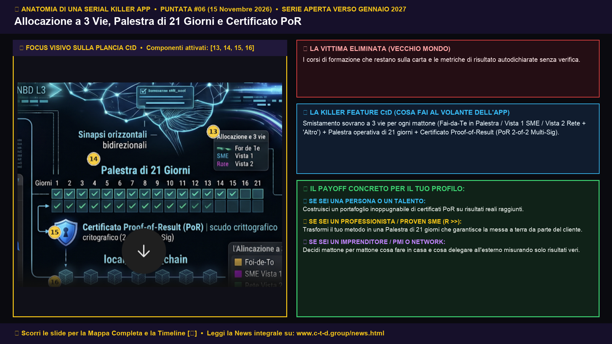
Carosello_LinkedIn_Puntata_06.pdf
📥 Scarica / Salva Carosello_LinkedIn_Puntata_06.pdf
🚀 Apri Finestra Post LinkedIn
🟢 56/58 caratteri (OK)
🟢 2431/3000 car. (Margine: +569)
Puntata #07 — Cordone Ombelicale 21gg e Qualifica Proven SME (R>>) NEXUS
🎯 STREAM 1 (08:15) — ANCORA LAPIDARIA #07-A
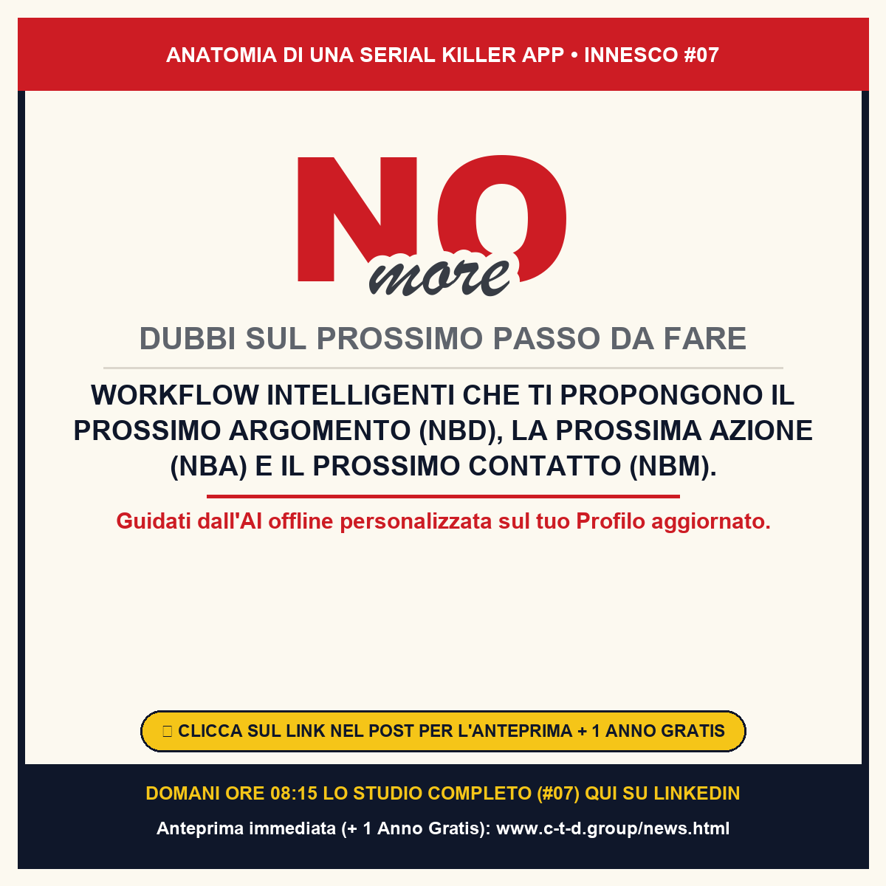
Ancora_LinkedIn_Puntata_07.pdf
📥 Scarica / Salva Ancora_LinkedIn_Puntata_07.pdf
🚀 Apri Finestra Post LinkedIn
🟢 53/58 caratteri (OK)
🟢 631/3000 car. (Margine: +2369)
📘 STREAM 2 (08:15) — STUDIO MASTER #07-B
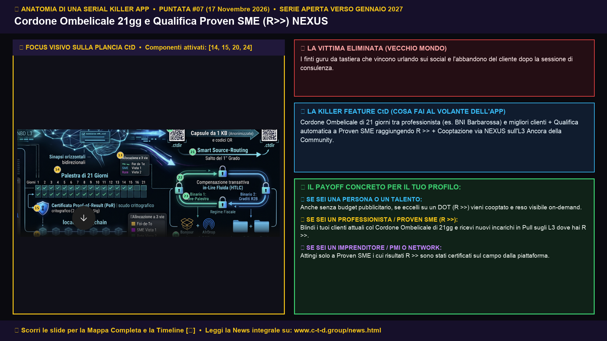
Carosello_LinkedIn_Puntata_07.pdf
📥 Scarica / Salva Carosello_LinkedIn_Puntata_07.pdf
🚀 Apri Finestra Post LinkedIn
🟢 53/58 caratteri (OK)
🟢 2985/3000 car. (Margine: +15)
Puntata #08 — Network Engineering: Score Ponte e 'Salto del 1° Grado'
🎯 STREAM 1 (08:15) — ANCORA LAPIDARIA #08-A
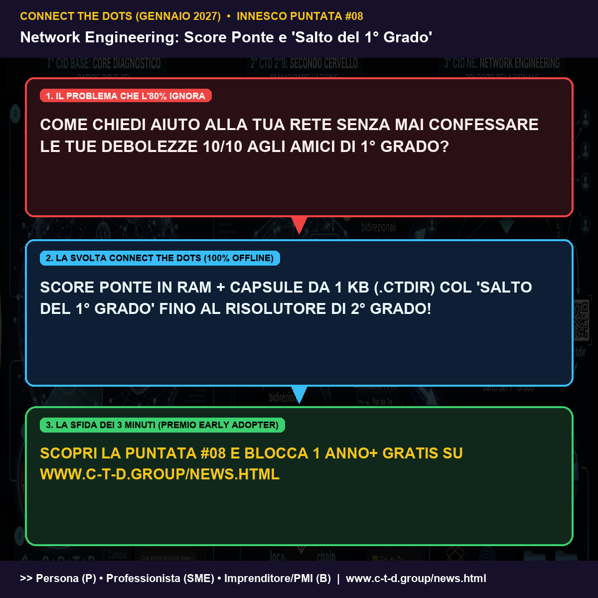
Ancora_LinkedIn_Puntata_08.pdf
📥 Scarica / Salva Ancora_LinkedIn_Puntata_08.pdf
🚀 Apri Finestra Post LinkedIn
🟢 55/58 caratteri (OK)
🟢 636/3000 car. (Margine: +2364)
📘 STREAM 2 (08:15) — STUDIO MASTER #08-B
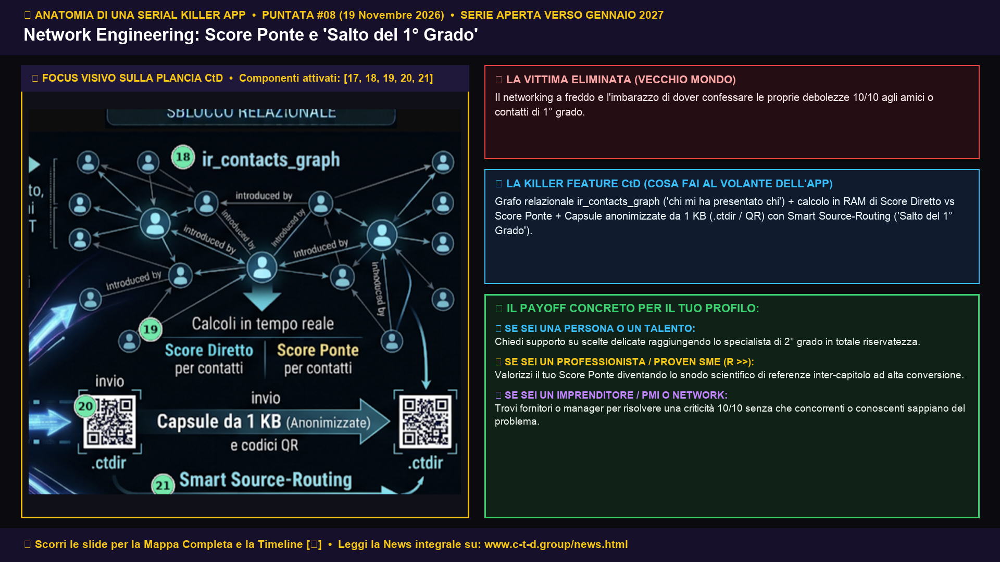
Carosello_LinkedIn_Puntata_08.pdf
📥 Scarica / Salva Carosello_LinkedIn_Puntata_08.pdf
🚀 Apri Finestra Post LinkedIn
🟢 54/58 caratteri (OK)
🟢 2679/3000 car. (Margine: +321)
Puntata #09 — Compensazione in-Lire Fluida a Doppio Binario (Persone & Imprese)
🎯 STREAM 1 (08:15) — ANCORA LAPIDARIA #09-A
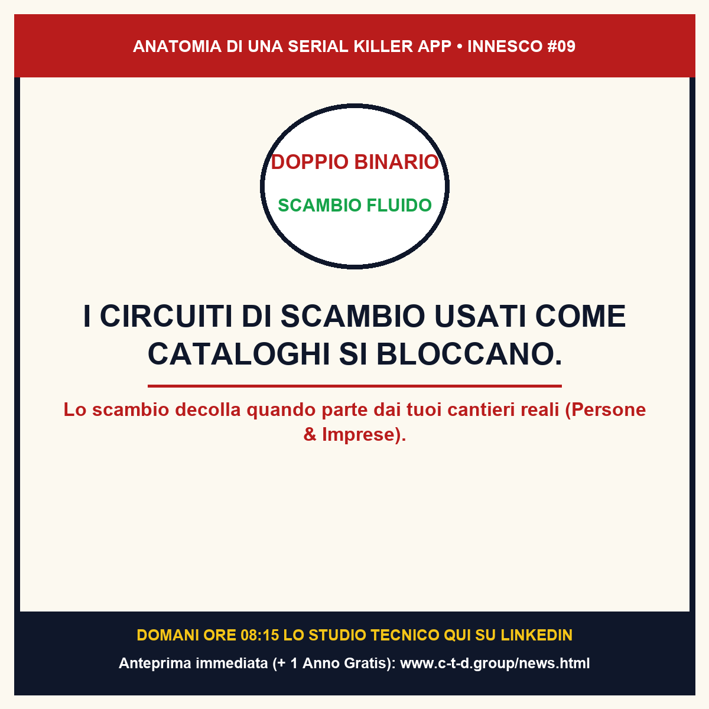
Ancora_LinkedIn_Puntata_09.pdf
📥 Scarica / Salva Ancora_LinkedIn_Puntata_09.pdf
🚀 Apri Finestra Post LinkedIn
🟢 55/58 caratteri (OK)
🟢 584/3000 car. (Margine: +2416)
📘 STREAM 2 (08:15) — STUDIO MASTER #09-B
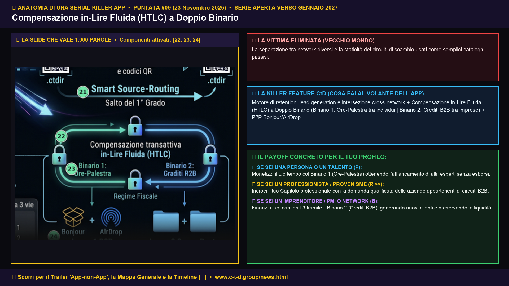
Carosello_LinkedIn_Puntata_09.pdf
📥 Scarica / Salva Carosello_LinkedIn_Puntata_09.pdf
🚀 Apri Finestra Post LinkedIn
🟢 55/58 caratteri (OK)
🟢 2743/3000 car. (Margine: +257)
Puntata #10 — I 24 Punti in 1 Sola Giornata & Il Patto Early Adopter (Gennaio 2027)
🎯 STREAM 1 (08:15) — ANCORA LAPIDARIA #10-A
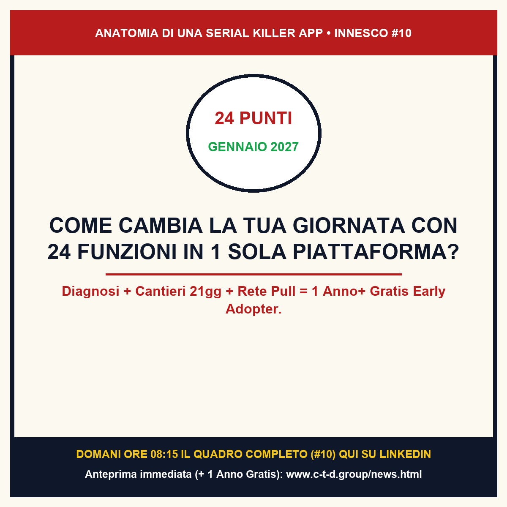
Ancora_LinkedIn_Puntata_10.pdf
📥 Scarica / Salva Ancora_LinkedIn_Puntata_10.pdf
🚀 Apri Finestra Post LinkedIn
🟢 54/58 caratteri (OK)
🟢 551/3000 car. (Margine: +2449)
📘 STREAM 2 (08:15) — STUDIO MASTER #10-B
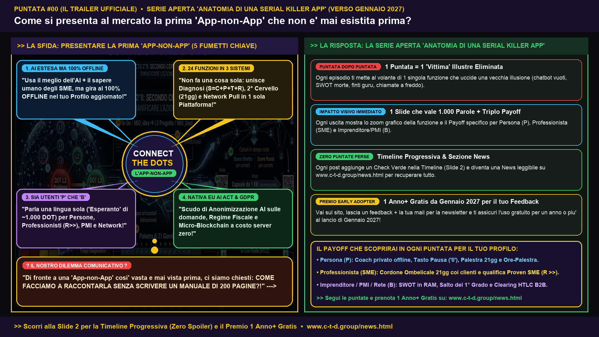
Carosello_LinkedIn_Puntata_10.pdf
📥 Scarica / Salva Carosello_LinkedIn_Puntata_10.pdf
🚀 Apri Finestra Post LinkedIn
🟢 57/58 caratteri (OK)
🟢 2539/3000 car. (Margine: +461)